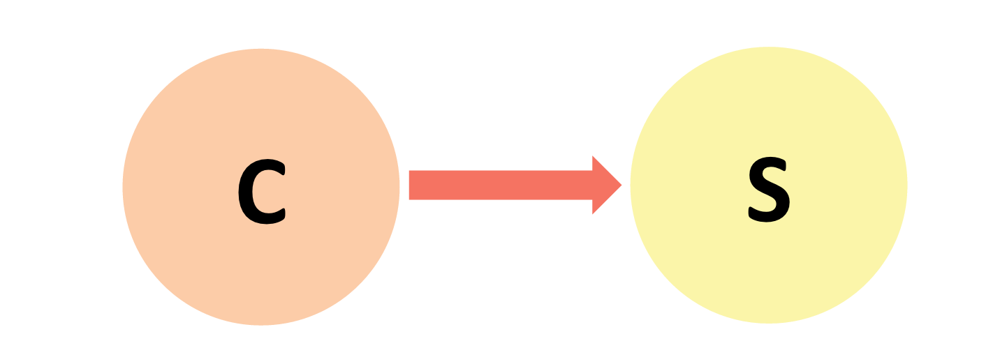
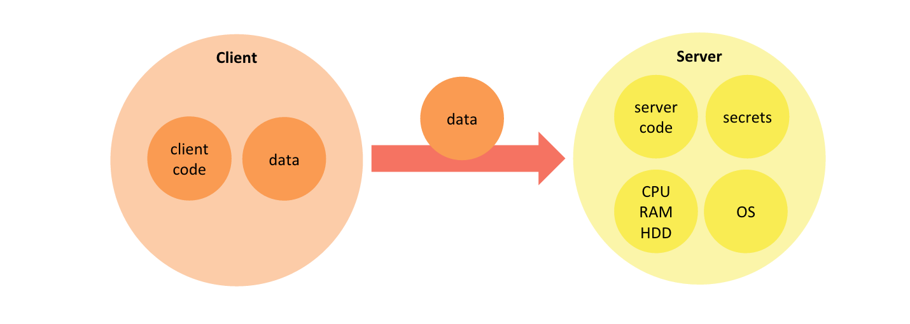
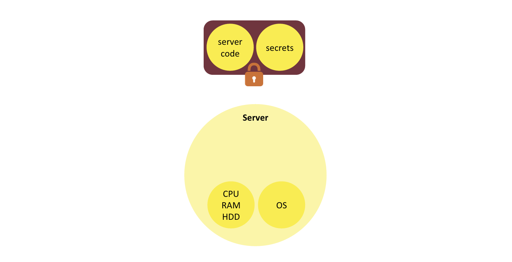
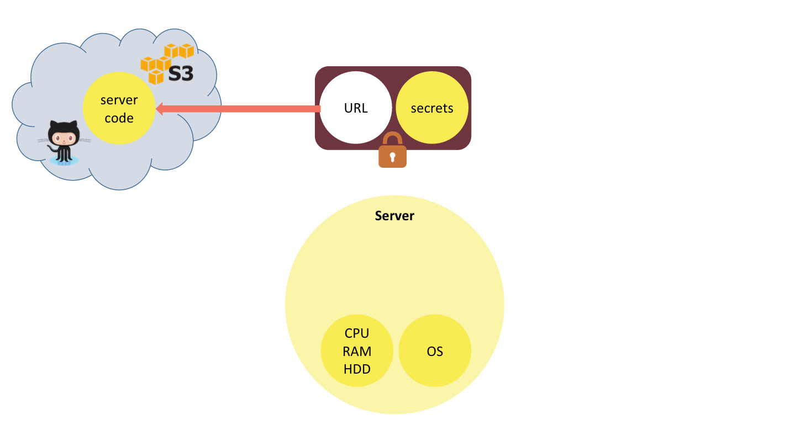
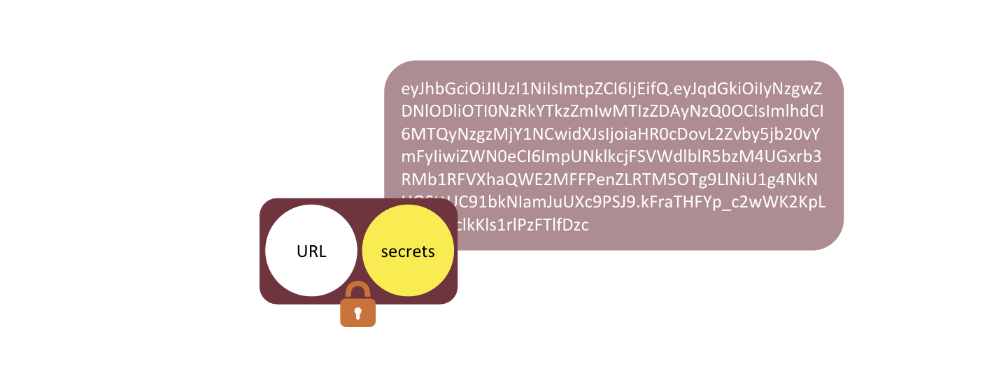
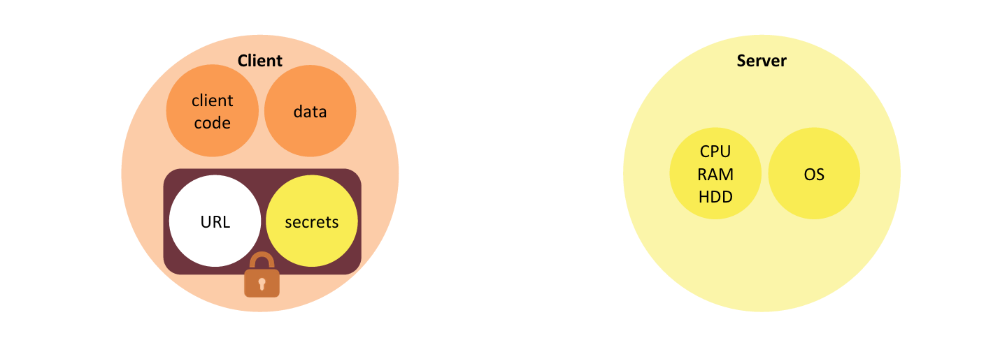
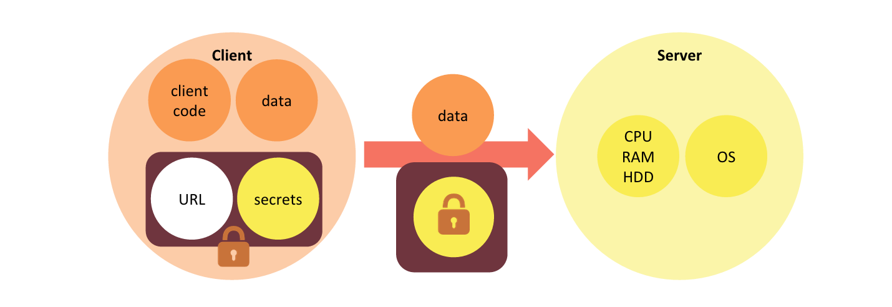

Documentation
How it works?
"Those who know, do" - Aristotle

The split of application functionality between front end and backend serves several purposes. It helps reuse backend computing resources across several clients. It also creates a trust boundary between client and server, which enables servers to authorize access to protected data or functionality. In a typical client-server application, the client submits data for processing after authenticating itself to the backend, and the backend responds after processing of the client request using protected resources.

As the technology evolved since the inception of the internet, so did the reasons for applying client-server architecture in web and mobile application design. An average smartphone today has more computing power than all of NASA had when people first landed on the Moon. Consequently there are fewer and fewer functional areas that cannot be satisfied with the client's computing power alone and require backend computing capacity.
One of the remaining reasons for using client-server architecture in modern applications that is unaffected by technological advances is that of a division of trust:
We still need a trust boundary between client and server to control access to shared data or functionality.
With creation of a trust boundary as one of the primary roles of the backend in modern mobile and web applications, let's have a closer look at the construction of the backend itself.
From backend to webtask
The typical backend of a mobile or web application provides raw computing resources (CPU, memory, disk, network, etc.) as well as the operating system and application framework capabilities that are different from that of the client. Most importantly, the backend encapsulates server code that implements part of the application logic as well as secrets this code requires to access protected data or functionality (database connection strings, API keys, etc.).
Let's deconstruct the server concepts. First, let's extract the two elements of the backend that are specific to the application: server code and the secrets it has access to. What remains: raw computing resources and OS, can be considered a commodity. Both server code and the secrets are data. They can be serialized together into one bundle, and cryptographically protected from tampering and disclosure.

Let's make one further transformation of that bundle. Instead of storing all of the server code in it, we externalize the code to a location that can be referenced with a URL (e.g. GitHub or S3), and store the URL in the bundle.

This bundle is a webtask token.
A webtask token defines backend application logic along with secrets necessary for its execution. It is cryptographically protected from tampering and disclosure and can be safely stored or passed through untrusted channels.
Since webtask tokens contain a reference to the server code rather than the code itself, their serialized size tends to be small given today's bandwidth standards. It is reasonable to pass webtask tokens around as part of the payload in a variety of protocols, including HTTP.

One place a webtask token can be securely stored is within the client application itself. Backend secrets remain safe form disclosure because they are encrypted.

When the client application makes a request to the server, in addition to sending client-specific data it includes the webtask token in the request. This is a webtask request.
A webtask request is a request from the client to the server that contains a webtask token in addition to regular client request data.
The webtask token in a webtask request informs the server what backend application logic to apply in processing of the request. It also supplies the secrets that the backend logic requires to perform its function.

Notice how the role of the server has changed in the transformation to the webtask model. The server provides a generic execution environment capable of executing any webtask rather than being scoped to a particular application logic. This generic server is a webtask runtime.
A webtask runtime is a server that provides a generic and uniform execution environment for webtasks.
There are several important implications of this new role of the server as a webtask runtime.
Webtask runtime, in order to remain generic, provides a uniform execution environment for all webtasks. This means that backend logic of all applications using given webtask runtime will have access to the same set of functionality provided by the OS and pre-installed software packages. How limiting is this uniform environment in practice? Clearly some applications have very specific and unique platform dependencies, and for them the webtask model may not be a good fit. However, looking at the most commonly used modules of popular programming frameworks, it becomes clear that a pareto rule can be applied: majority of applications are satisfied with a small set of core modules. This phenomenon makes the uniform webtask runtime a viable backend alternative for a large number of applications.
The uniformity of the webtask runtime combined with lack of application-specific instance state imposed by the webtask model has several advantages over traditional backends. Webtask runtime scales out easily at the scope of not one but many disparate applications. It therefore enables application logic layer to leverage some of the same economies of scale that large data centers utilize at the hardware level.
Webtask runtime enables commoditization of application logic processing at a higher level of abstration than PaaS.
From theory to practice
You can read more about the technology behind webtasks and how we have implemented the webtask runtime at the AWS Startup Spotlight blog Sandboxing code in the era of containers.